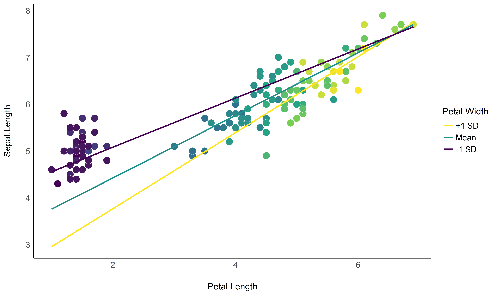
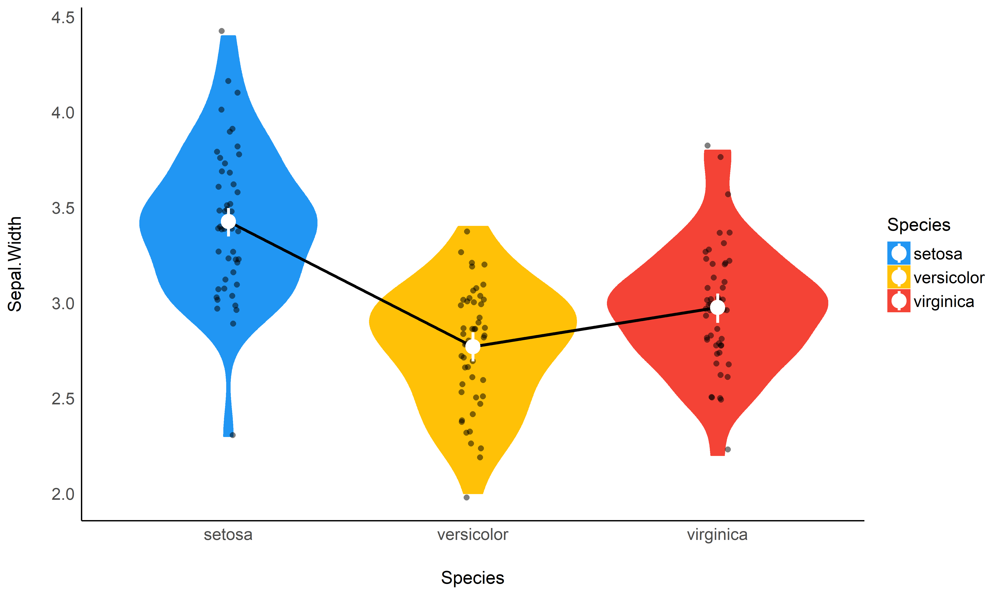
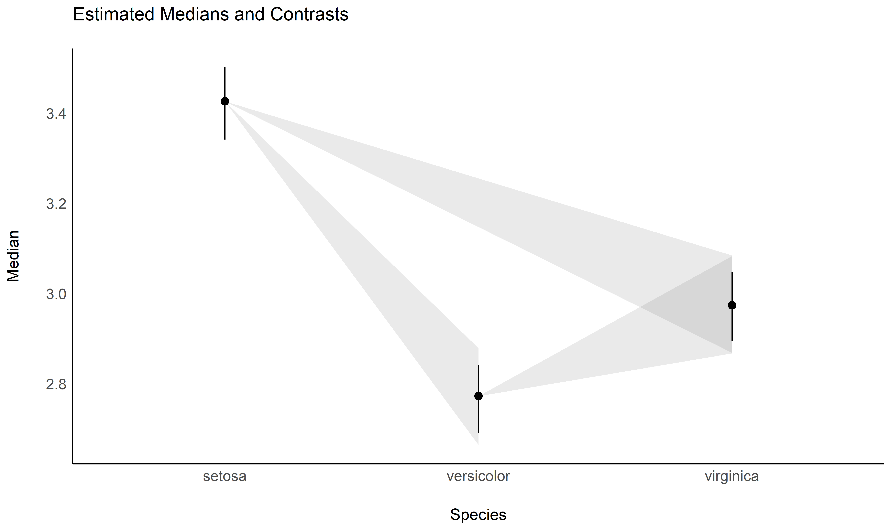
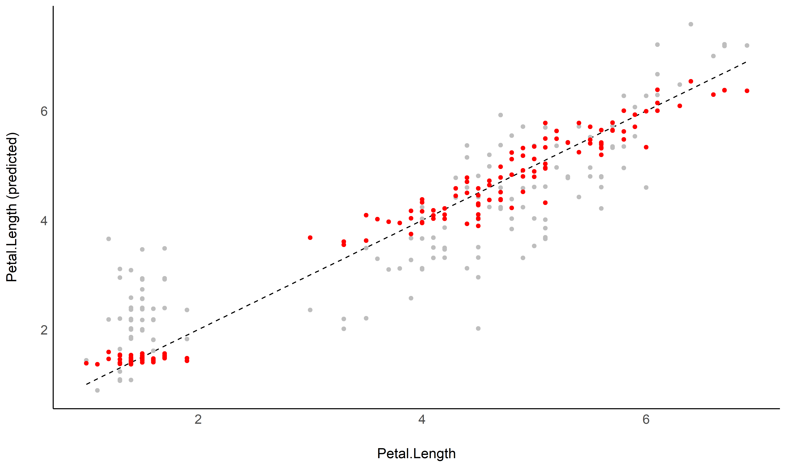

modelbased is a lightweight package helping with model-based estimations, used in the computation of marginal means, contrast analysis and predictions.
Installation
Run the following:
install.packages("devtools")
devtools::install_github("easystats/modelbased")library("modelbased")Documentation


Click on the buttons above to access the package documentation and the easystats blog, and check-out these vignettes:
Features
The package is built around 5 main functions:
-
estimate_means(): Estimates the average values at each factor levels -
estimate_contrasts(): Estimates and tests contrasts between different factor levels -
estimate_slopes(): Estimates the slopes of numeric predictors at different factor levels -
estimate_response(): Predict the response variable using the model -
estimate_smooth(): Describes a non-linear term (e.g. in GAMs) by its linear parts
These functions are powered by the visualisation_matrix() function, a smart tool for guessing the appropriate reference grid.
The package currently only supports rstanarm models, but will be expanded to cover a large variety of frequentist and Bayesian models.
Examples
Create smart grids to represent complex interactions
Check-out this vignette to create this plot:

Estimate marginal means
Check-out this vignette to create this plot:

library(rstanarm)
model <- stan_glm(Sepal.Width ~ Species, data = iris)
estimate_means(model)Contrast analysis
Check-out this vignette to create this plot:

estimate_contrasts(model)
## Level1 | Level2 | Median | 89% CI | pd | % in ROPE | Median (std.)
## --------------------------------------------------------------------------------------
## setosa | versicolor | 0.65 | [ 0.55, 0.77] | 100% | 0% | 1.50
## setosa | virginica | 0.45 | [ 0.34, 0.56] | 100% | 0% | 1.03
## versicolor | virginica | -0.21 | [-0.32, -0.10] | 99.83% | 6.93% | -0.47Check the contrasts at different points of another linear predictor
model <- stan_glm(Sepal.Width ~ Species * Petal.Length, data = iris)
estimate_contrasts(model, modulate = "Petal.Length", length = 3)## Level1 | Level2 | Petal.Length | Median | 89% CI | pd | % in ROPE | Median (std.)
## ----------------------------------------------------------------------------------------------------
## setosa | versicolor | 1.00 | 1.52 | [ 1.05, 2.00] | 100% | 0% | 3.48
## setosa | virginica | 1.00 | 1.23 | [ 0.69, 1.76] | 100% | 0.02% | 2.82
## versicolor | virginica | 1.00 | -0.30 | [-1.03, 0.39] | 74.30% | 13.90% | -0.68
## setosa | versicolor | 3.95 | 1.79 | [ 1.04, 2.53] | 100% | 0% | 4.11
## setosa | virginica | 3.95 | 1.83 | [ 1.03, 2.60] | 100% | 0% | 4.21
## versicolor | virginica | 3.95 | 0.04 | [-0.18, 0.26] | 61.40% | 51.00% | 0.09
## setosa | versicolor | 6.90 | 2.08 | [ 0.50, 3.73] | 98.10% | 1.18% | 4.77
## setosa | virginica | 6.90 | 2.45 | [ 0.80, 3.95] | 99.25% | 0.42% | 5.61
## versicolor | virginica | 6.90 | 0.37 | [-0.06, 0.78] | 91.25% | 11.97% | 0.85Find a predictor’s slopes at each factor level
estimate_slopes(model)
## Species | Median | 89% CI | pd | % in ROPE | Median (std.)
## -----------------------------------------------------------------------
## setosa | 0.42 | [0.10, 0.69] | 98.85% | 4.10% | 1.70
## versicolor | 0.33 | [0.19, 0.47] | 99.95% | 0.57% | 1.32
## virginica | 0.21 | [0.09, 0.33] | 99.83% | 6.95% | 0.87Generate predictions from your model to compare it with original data
Check-out this vignette to create this plot:

estimate_response(model)| Sepal.Length | Species | Median | CI_low | CI_high |
|---|---|---|---|---|
| 5.1 | setosa | 1.47 | 1.10 | 1.91 |
| 4.9 | setosa | 1.44 | 1.05 | 1.85 |
| 4.7 | setosa | 1.39 | 0.96 | 1.79 |
| 4.6 | setosa | 1.41 | 0.99 | 1.83 |
| 5.0 | setosa | 1.47 | 1.01 | 1.88 |
| 5.4 | setosa | 1.52 | 1.15 | 1.95 |
Estimate the link between the response and a predictor
See this vignette to create this plot: 
model <- stan_glm(Sepal.Width ~ poly(Petal.Length, 2), data=iris)
estimate_link(model)| Petal.Length | Median | CI_low | CI_high |
|---|---|---|---|
| 1.00 | 3.62 | 3.51 | 3.73 |
| 1.98 | 3.18 | 3.11 | 3.24 |
| 2.97 | 2.90 | 2.82 | 2.97 |
| 3.95 | 2.78 | 2.71 | 2.86 |
| 4.93 | 2.83 | 2.77 | 2.89 |
| 5.92 | 3.05 | 2.96 | 3.14 |
| 6.90 | 3.44 | 3.25 | 3.63 |
Describe the smooth term by its linear parts
estimate_smooth(model)
## Part | Start | End | Size | Trend | Linearity
## ------------------------------------------------
## 1 | 1.00 | 4.14 | 53.50% | -0.01 | 0.94
## 2 | 4.14 | 6.90 | 46.50% | 0.01 | 0.94